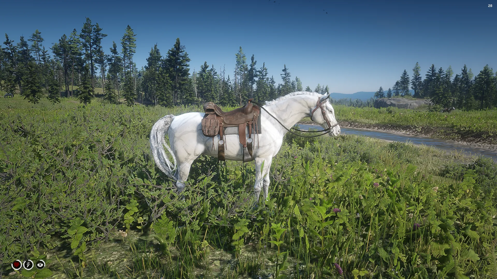
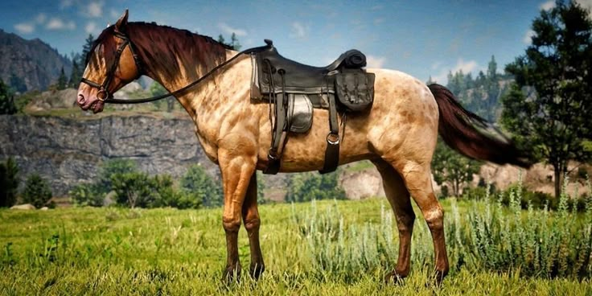
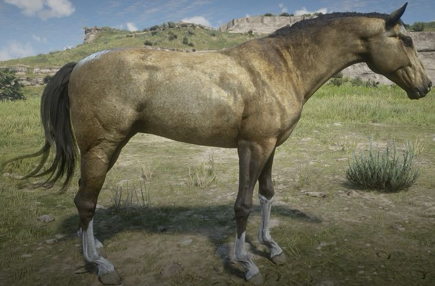

Koně v Red Dead Redemption 2
Koně jsou důležitou součástí hry Red Dead Redemption 2. Slouží k cestování po herním světě a jednotlivá plemena se liší rychlostí, výdrží a ovladatelností.
White Arabian

White Arabian je rychlý a dobře ovladatelný kůň, kterého lze najít v oblasti Lake Isabella.
Missouri Fox Trotter

Missouri Fox Trotter patří mezi rychlé a vytrvalé koně vhodné pro cestování na dlouhé vzdálenosti.
Turkoman

Turkoman kombinuje dobrou rychlost, výdrž a odolnost, díky čemuž je vhodný i do nebezpečných situací.